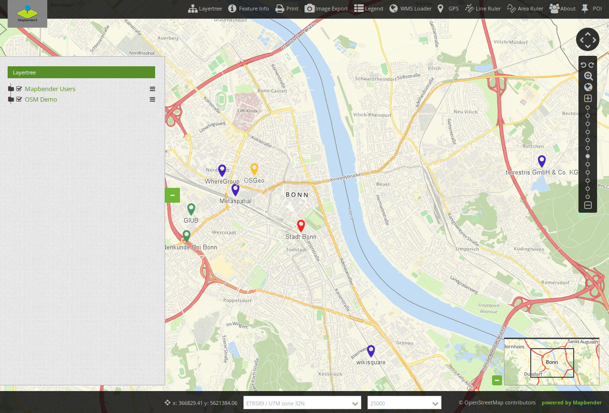

Mapbender templates¶
Get to know the Mapbender templates. Mapbender offers some templates ready to use.
Fullscreen Template¶
{kind=link}
View a demo of the Mapbender Fullscreen Template http://demo.mapbender3.org/application/mapbender_user
Regions of the Fullscreen Template:
- Toolbar (button region)
- Sidepane (layertree, legend, search,...)
- Content (map, navigation toolbar, scalebar,...)
- Footer (impressum, scaledisplay, ...)
Specials:
- dark background style of the template
- fullscreen display with sidepane
Fullscreen Alternative Template¶
View a demo of the Mapbender Fullscreen Alternative Template http://demo.mapbender3.org
Regions of the Fullscreen Alternative Template
- Toolbar (button region)
- Sidepane (layertree, legend, search,...)
- Content (map, navigation toolbar, scalebar,...)
- Footer (impressum, scaledisplay, ...)
Specials:
- light background style of the template
- fullscreen display with sidepane
Classic Template¶
View a demo of the Mapbender Classic Template http://demo.mapbender3.org
Regions of the Classic Template
- Toolbar (button region)
- Sidepane (layertree, legend, search,...)
- Content (map, navigation toolbar, scalebar,...)
- Footer (impressum, scaledisplay, ...)
Specials:
- fixed size of the regions
Mobile Template¶

View a demo of the Mapbender Mobile Template http://release.mapbender3.org/application/mapbender_mobile
Regions of the mobile Template
- footer (button region)
- Content (map, navigation toolbar)
- Mobilepane (area that will overlapp the map, when a dialog like Layertree, FeatureInfo is displayed)
Please note that not all elements can be used with the Mobile template at the moment. Here is a list of the elements that can be used:
- Map
- GPS-Position
- Layertree (different design, will only show the root layer title of a service, you can only de-/activate a whole service)
- BaseSourceSwitcher (different design: list not buttons)
- FeatureInfo
- Navigation Toolbar (Zoombar)
- HTML
- Button
- SimpleSearch